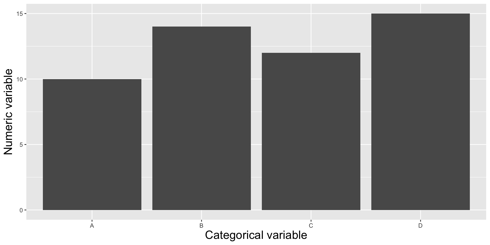
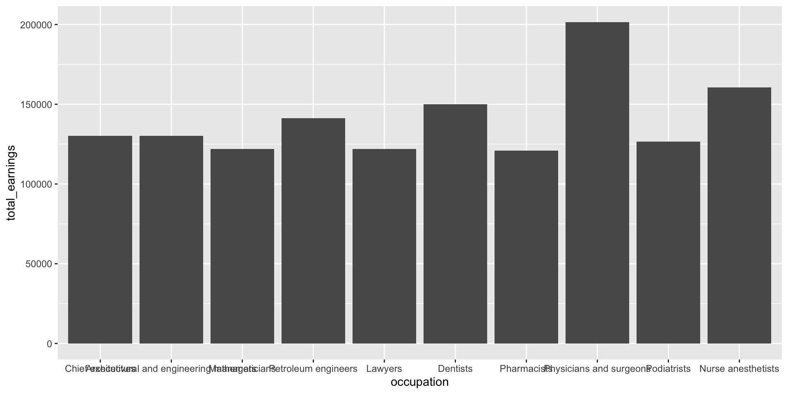
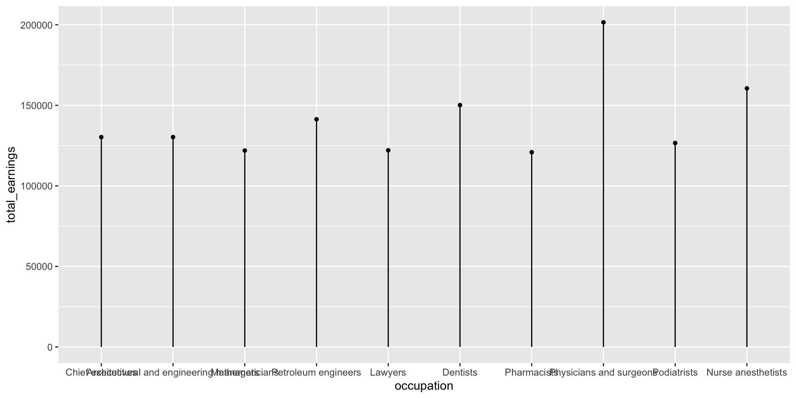
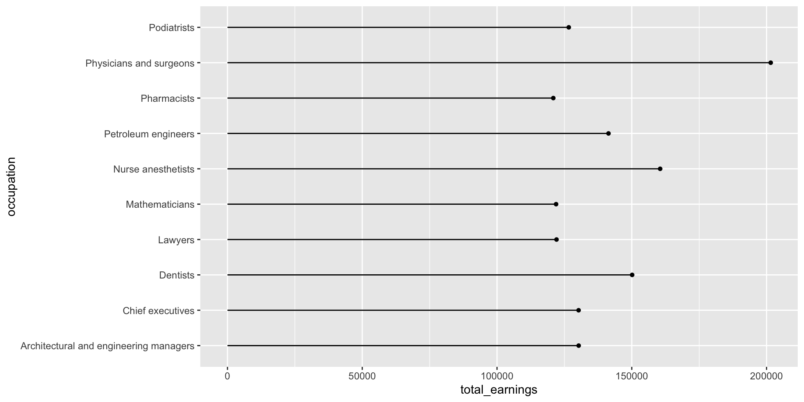
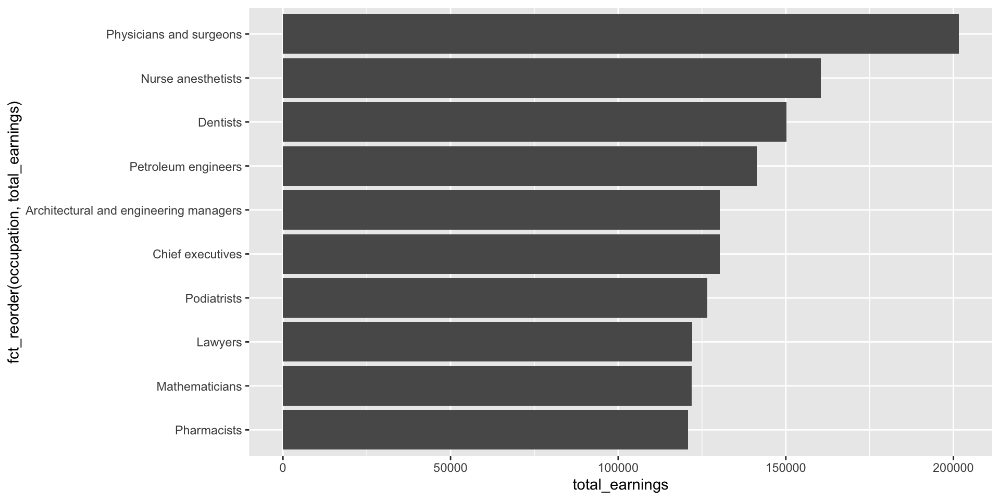
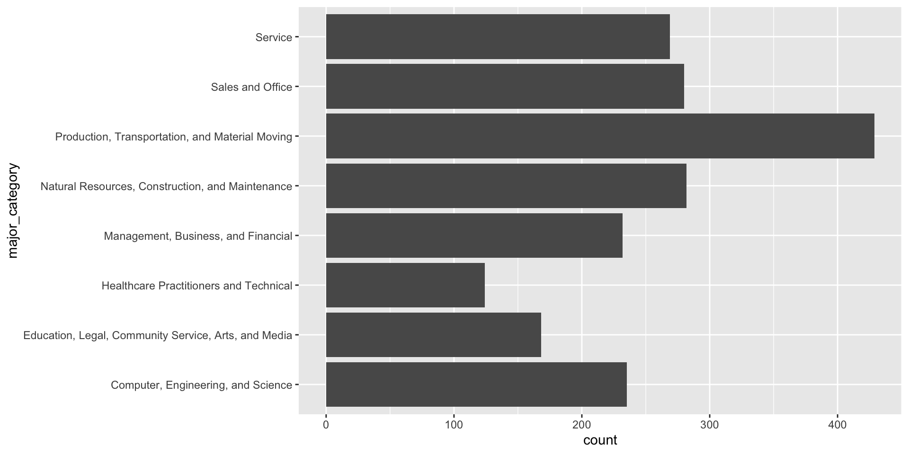
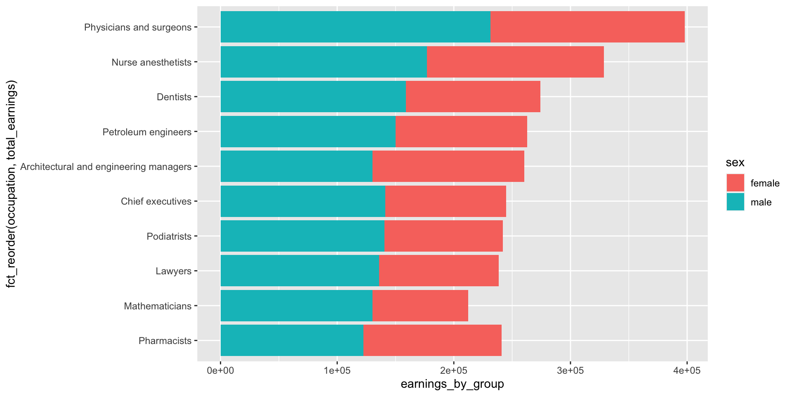
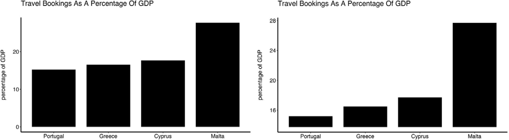
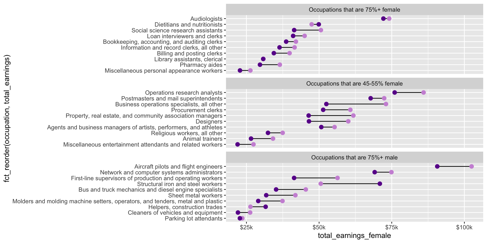

Showing the relationship between a numeric and categorical variable, i.e. comparing categorical groups based on their numeric values.

Roadmap
In this lesson, we’ll explore two (highly interchangeable) chart types:
1. bar plots 2. lollipop plots
We’ll discuss:
handling long x-axis labels
reordering groups
adding labels
comparing multiple groups
critical considerations when creating bar / lollipop plots
The data: women in the workforce
According to the American Association of University Women (AAUW), the gender pay gap is defined as “…the gap between what men and women are paid. Most commonly, it refers to the median annual pay of all women who work full time and year-round, compared to the pay of a similar cohort of men.” We’ll explore income data from the Bureau of Labor Statistics and the Census Bureau, which has been moderately pre-processed by TidyTuesday organizers for the March 5, 2021 data set.
We’ll use these data to explore a two different questions: (1) What are the top 10 occupations with the highest median earnings (across males and females)? (2) How do median earnings differ between males and females in those same occupations?
##~~~~~~~~~~~~~~~~~~~~~~~~~~~~~~~~~~~~~~~~~~~~~~~~~~~~~~~~~~~~~~~~~~~~~~~~~~~~~~## setup ----##~~~~~~~~~~~~~~~~~~~~~~~~~~~~~~~~~~~~~~~~~~~~~~~~~~~~~~~~~~~~~~~~~~~~~~~~~~~~~~#..........................load packages.........................library(tidyverse)#..........................import data...........................jobs <-read_csv("https://raw.githubusercontent.com/rfordatascience/tidytuesday/master/data/2019/2019-03-05/jobs_gender.csv")##~~~~~~~~~~~~~~~~~~~~~~~~~~~~~~~~~~~~~~~~~~~~~~~~~~~~~~~~~~~~~~~~~~~~~~~~~~~~~~## wrangle data ----##~~~~~~~~~~~~~~~~~~~~~~~~~~~~~~~~~~~~~~~~~~~~~~~~~~~~~~~~~~~~~~~~~~~~~~~~~~~~~~jobs_clean <- jobs |># add cols (needed for dumbbell plot) ----mutate(percent_male =100- percent_female, # % of females within each industry was already includeddifference_earnings = total_earnings_male - total_earnings_female) |># diff in earnings between M & F# rearrange columns ----relocate(year, major_category, minor_category, occupation, total_workers, workers_male, workers_female, percent_male, percent_female, total_earnings, total_earnings_male, total_earnings_female, difference_earnings, wage_percent_of_male) |># drop rows with missing earning data ----drop_na(total_earnings_male, total_earnings_female) |># make occupation a factor ----mutate(occupation =as.factor(occupation)) |># ---- this next step is for creating our dumbbell plots ----# classify jobs by percentage male or female ----mutate(group_label =case_when( percent_female >=75~"Occupations that are 75%+ female", percent_female >=45& percent_female <=55~"Occupations that are 45-55% female", percent_male >=75~"Occupations that are 75%+ male" ))
Bar & lollipop plots to visualize rankings
Let’s first explore the top ten occupations with the highest median earnings in 2016 (full-time workers > 16 years old). The heights of both the bars and lollipops represent the total estimated median earnings (total_earnings).
jobs_clean |>filter(year ==2016) |>slice_max(order_by = total_earnings, n =10) |># keep top 10 jobs with most `total_earnings`ggplot(aes(x = occupation, y = total_earnings)) +geom_col()

jobs_clean |>filter(year ==2016) |>slice_max(order_by = total_earnings, n =10) |>ggplot(aes(x = occupation, y = total_earnings)) + ggalt::geom_lollipop()

Make space for long x-axis labels
Give those long x-axis labels some breathing room using coord_flip(), which flips cartesian (x,y) coordinates so that the horizontal becomes the vertical and vice versa.
jobs_clean |>filter(year ==2016) |>slice_max(order_by = total_earnings, n =10) |>ggplot(aes(x = occupation, y = total_earnings)) +geom_col() +coord_flip()
jobs_clean |>filter(year ==2016) |>slice_max(order_by = total_earnings, n =10) |>ggplot(aes(x = occupation, y = total_earnings)) + ggalt::geom_lollipop() +coord_flip()

Reordering groups helps readers derive insight
Here, we use forcats::fct_reorder() to reorder the levels of our x-axis variable, occupation, based on a numeric variable, total_earnings (NOTE: we do not have to reorder based on the same numeric variable that’s plotted on the y-axis; here it makes sense to do so; also see this blog post):
jobs_clean |>filter(year ==2016) |>slice_max(order_by = total_earnings, n =10) |>ggplot(aes(x =fct_reorder(occupation, total_earnings), y = total_earnings)) +geom_col() +coord_flip()

jobs_clean |>filter(year ==2016) |>slice_max(order_by = total_earnings, n =10) |>ggplot(aes(x =fct_reorder(occupation, total_earnings), y = total_earnings)) + ggalt::geom_lollipop() +coord_flip()
{scales}: a true label-editing hero
While we’re on the topic of making things easier to read, let’s use the {scales} package to update our labels so that they read more like dollar values:
jobs_clean |>filter(year ==2016) |>slice_max(order_by = total_earnings, n =10) |>ggplot(aes(x =fct_reorder(occupation, total_earnings), y = total_earnings)) + ggalt::geom_lollipop() +geom_text(aes(label = scales::dollar(total_earnings)), hjust =-0.2) +scale_y_continuous(labels = scales::label_currency(accuracy =1, scale =0.001, suffix ="k"),limits =c(0, 250000)) +# expand axis to make room for valuescoord_flip()

An aside: geom_col() vs. geom_bar()
Use geom_col() when your data is already summarized or you have a variable in your data set that includes y-axis values, which will map to the height of the bars. E.g. we already have a numeric variable in our data set called, total_earnings – those numeric values are mapped to the height of each bar in our plot.
jobs_clean |>filter(year ==2016) |>slice_max(order_by = total_earnings, n =10) |>ggplot(aes(x = occupation, y = total_earnings)) +geom_col() +coord_flip()

Use geom_bar() if you want to ggplot to count up numbers of rows and map those counts to the height of bars in your plot. E.g. we want to know how many occupations are included for each major category in our jobs_gender_clean data set (NOTE: we don’t have a count column in our data frame):
Plotting 2+ groups (e.g. male vs. female earnings)
We’ll need to transform our data from wide to long format, where total earning for males and females are in the same column (we’ll name this earnings_by_group), and a secondary column denotes which group those earnings are associated with (total_earnings_female, total_earnings_male). Also note that because geom_lollipop() doesn’t accept a position parameter, we’ll instead use geom_linerange() + geom_point():
The axis of a bar (or related) plot must start at zero
Truncated axes leads viewers to perceive illustrated differences as larger or more important than they actually are (i.e. a truncation effect). Yang et al. (2021) empirically tested this effect and found that this truncation effect persisted even after viewers were taught about the effects of y-axis truncation.

Figure 2 from Yang et al. 2021. The left-most plot without a truncated y-axis was presented to the control group of viewers. The right-most plot with a truncated y-axis was presented to the test group of viewers.
Be cautious when using bar plots to summarize continuous data
Bar plots shine when you need to compare counts (e.g. populations size of different countries, total earnings by group, etc.). However, you should proceed with caution when using bar plots to visualize the distribution of / summarize your data. Doing so can be misleading, particularly when you have small sample sizes. Why?
bar plots hide the distribution of the underlying data (many different distributions can lead to the same plot)
when used this way, the height of the bar (typically) represents the mean of the data, which can cause readers to incorrectly infer that the data are normally distributed with no outliers (this of course may be true in certain cases, but certainly not always)
Lollipop variant: dumbbell plot
Dumbbell plots can be a really simple and intuitive way to visualize a change or difference in two sets of data points:

We can make dumbbell plots using a combination of geom_segment() and geom_point().
Subset occupation data
Let’s say we want to explore differences in male vs. female median salaries across occupations that are female dominated (75%+ female), male dominated (75%+ male), and those that are a relatively even split (45-55% female). Let’s first randomly select 10 occupations from each of those categories:
#....guarantee the same random samples each time we run code.....set.seed(0)#.........get 10 random jobs that are 75%+ female (2016).........f75 <- jobs_clean |>filter(year ==2016, group_label =="Occupations that are 75%+ female") |>slice_sample(n =10)#..........get 10 random jobs that are 75%+ male (2016)..........m75 <- jobs_clean |>filter(year ==2016, group_label =="Occupations that are 75%+ male") |>slice_sample(n =10)#........get 10 random jobs that are 45-55%+ female (2016).......f50 <- jobs_clean |>filter(year ==2016, group_label =="Occupations that are 45-55% female") |>slice_sample(n =10)#.......combine dfs & relevel factors (for plotting order).......subset_jobs <-rbind(f75, m75, f50) |>mutate(group_label =fct_relevel(group_label, "Occupations that are 75%+ female", "Occupations that are 45-55% female", "Occupations that are 75%+ male"))
Create dumbbell plot
See the output on the next slide.
# initialize plot (we'll map our aesthetics locally for each geom, below) ----ggplot(subset_jobs) +# create dumbbells ----geom_segment(aes(x = total_earnings_female, xend = total_earnings_male, y =fct_reorder(occupation, total_earnings), yend = occupation)) +# reorder occupation by avg_salary heregeom_point(aes(x = total_earnings_male, y = occupation), color ="#CD93D8", size =2.5) +geom_point(aes(x = total_earnings_female, y = occupation), color ="#6A1E99", size =2.5) +# facet wrap by group ----facet_wrap(~group_label, nrow =3, scales ="free_y") +# "free_y" plots only the axis labels that exist in each group# axis breaks & $ labels ----scale_x_continuous(labels = scales::label_dollar(scale =0.001, suffix ="k"),breaks =c(25000, 50000, 75000, 100000, 125000))
Dumbbell plot output
There are definitely some additional modifications we would need to make before calling this plot done (e.g. adding a title, legend information, theme) – we’ll come back to that in a later lecture.